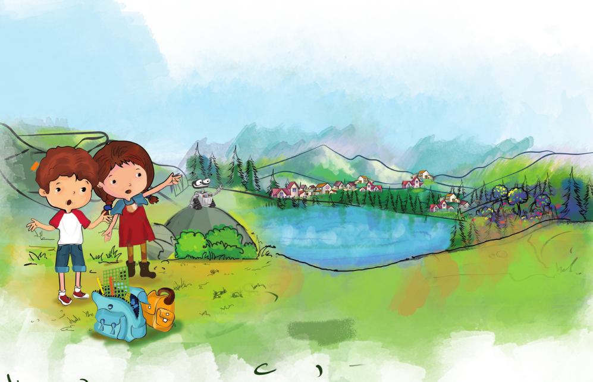
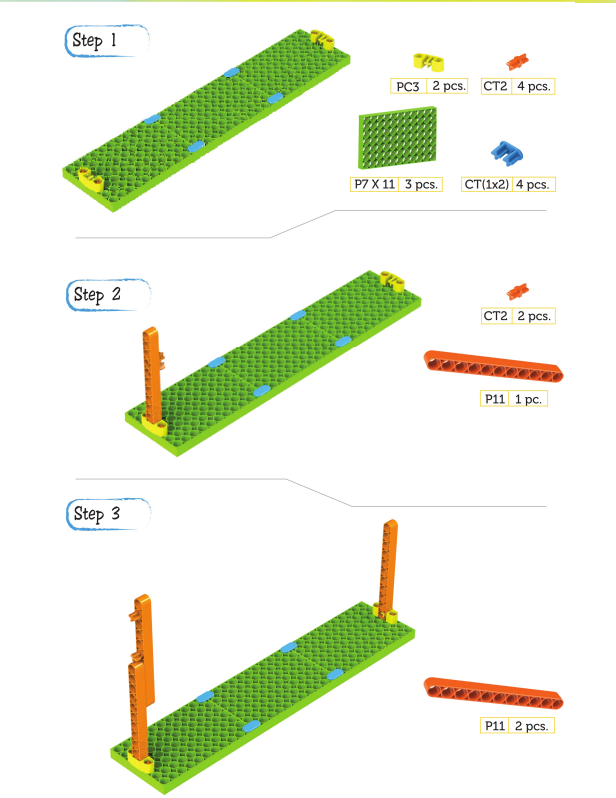
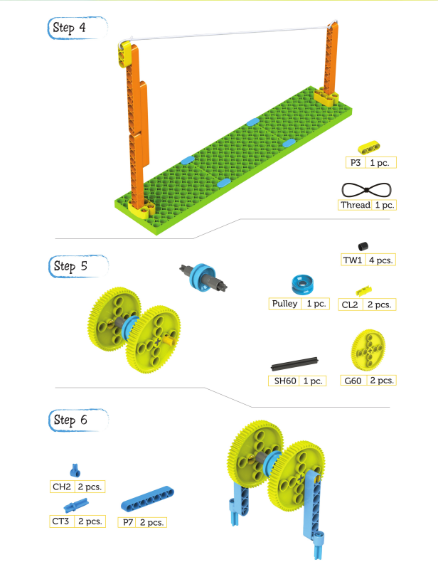
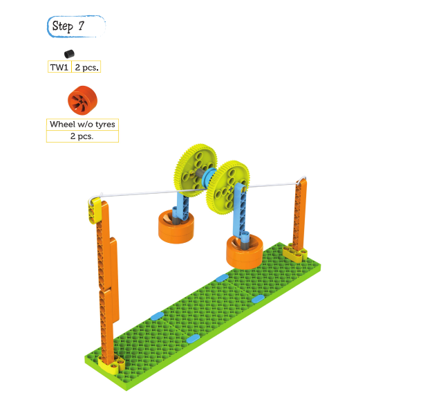

The villagers said their goodbyes, and three of them resumed their journey.
They reach a valley after a few miles and feel trapped.
Kit: Laya, figure out how to get to the other side nowww.
The villagers said their goodbyes, and three of them resumed their journey.
They reach a valley after a few miles and feel trapped.
Kit: Laya, figure out how to get to the other side nowww.

Kit: Hey, I've got the plan ready. Would you like to hear it?
Robb: Tell us, tell us.
Laya: We can create a Zipline ride that will transport us to the other side.
Robb: Yes, we can toss a ring (tied to a rope) to the other side and then go through the zipline once it is hooked in the tree branch.
KIT: Flying sounds exciting. Let's get to work, Laya. Rob, get our BLIX set please. We're going to build a zipline ride! Just follow these instructions and we'll be soaring through the air in no time. Let's go!


